THE PEACH-FCC-K1,R1
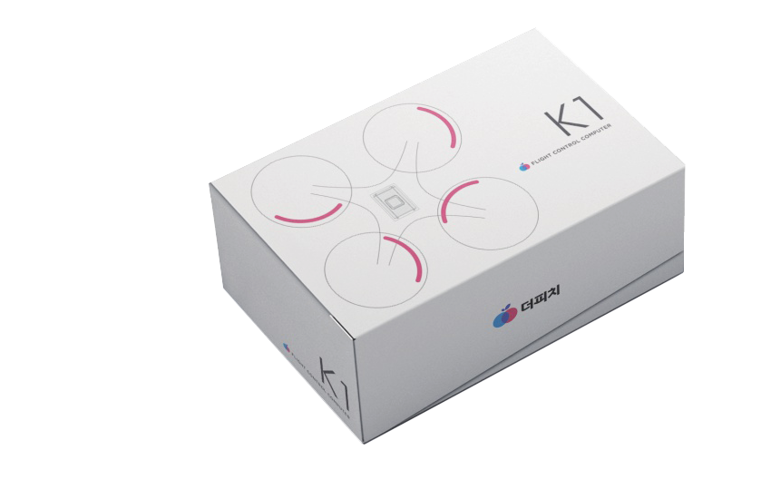
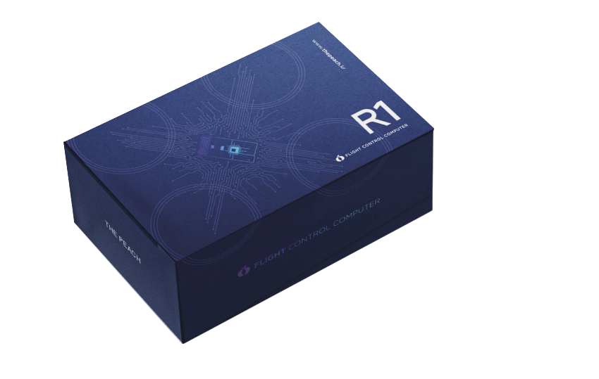
순수 국내기술로 개발된 더피치 자체개발 국산 비행제어시스템 THE PEACH-FCC-K1과 R1을 만나보세요.
ISO 14001, IPC-A-610 인증 공장에서 PCB, SMT를 생산하여 엄격한 품질 검사 후 출고됩니다. (PX4, Ardupilot, QGC, Mission Planner 지원)
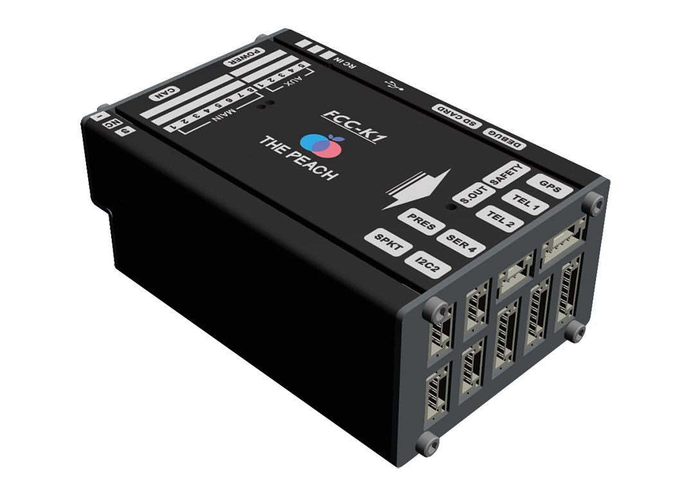
THE PEACH-FCC-K1
검증된 오픈소스SW 기반으로 국내 드론 기업들을 위해
양산한 더피치의 픽스호크 계열 FC
부속품
| 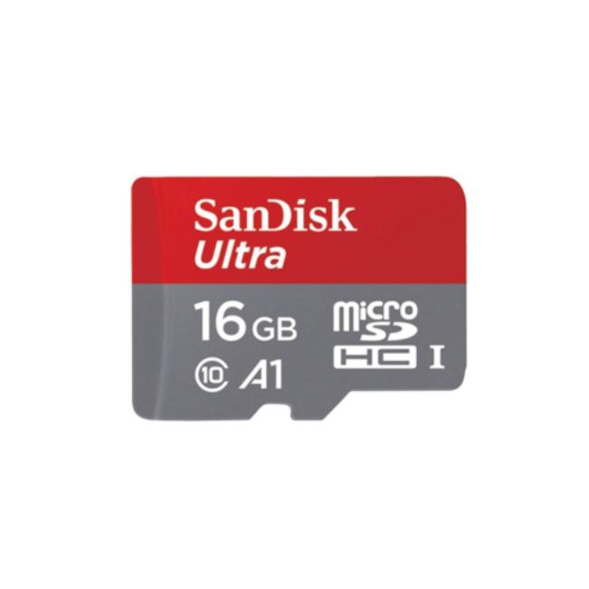 |
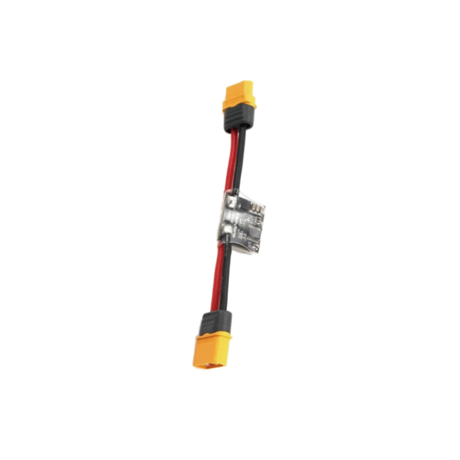 |
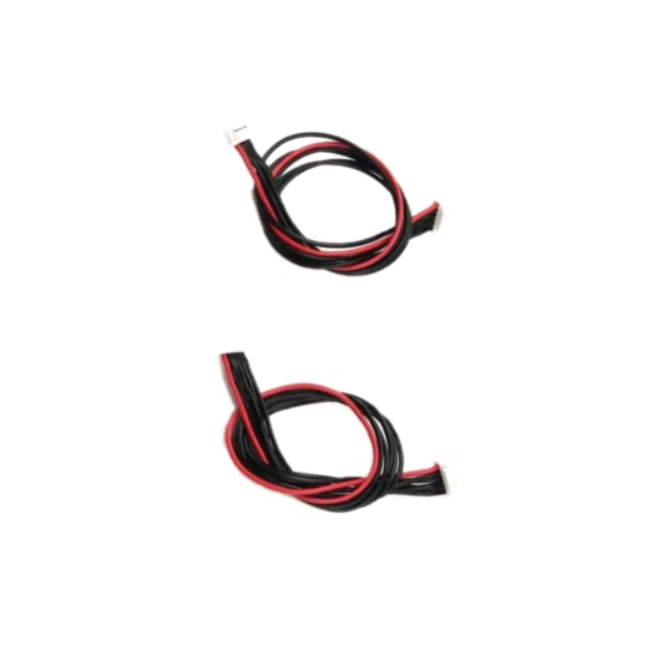 |
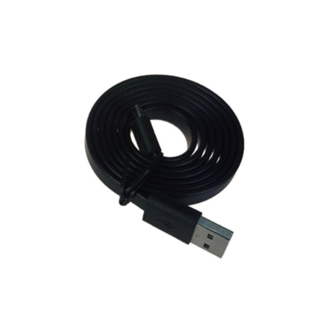 |
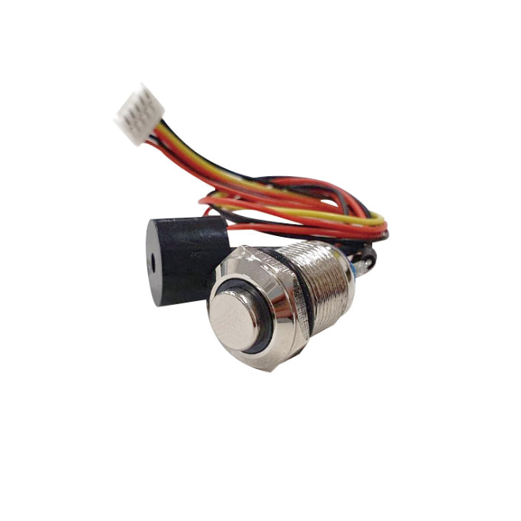 |
| 마이크로 SD카드 16GB |
PM02 V3 전원 모듈 |
6Pin MLX 케이블
6Pin JST GH 케이블 |
USB A 타입 -
마이크로 5Pin 케이블 |
세이프티 스위치 및
부저 케이블 |
회로도
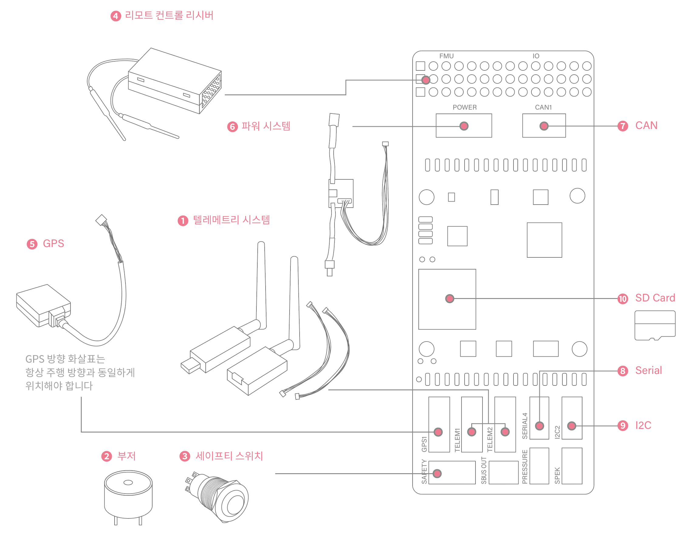
텔레메트리시스템
- 기체의 미션 계획을 실행하고, 기체 실시간 제어 및 모니터링이 가능합니다.
부저
- 기체의 상태를 알람으로 알려주는 오디오 신호를 제공합니다.
세이프티 스위치
- 기체 모터를 잠금/해제 할 수 있는 안전 스위치입니다.
리모트 컨트롤 리시버
- 조종자가 수동으로 기체를 제어할 수 있습니다.
파워시스템
- 외부 배터리와 연결할 수 있습니다.
CAN
- 외부 기능을 사용하는 장치를 추가 설치할 수 있습니다.
Serial
- 직렬 통신을 사용하는 장치를 추가 설치할 수 있습니다.
I2C
- I2C 방식의 통신을 위한 장치를 추가 설치할 수 있습니다.
THE PEACH-FCC-R1
다양한 임무SW를 실행할 수 있는
라즈베리파이 보드가 결합된 FC
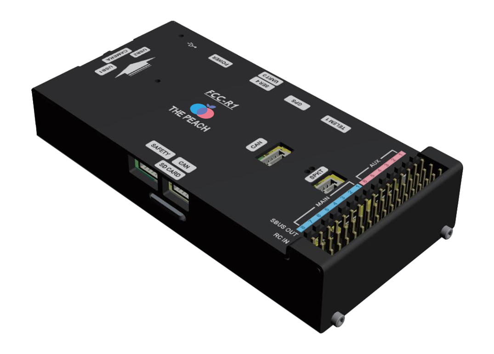
부속품
|
|
|
 |
|
| 마이크로 SD카드 16GB |
PM02 V3 전원 모듈 |
6Pin MLX 케이블
6Pin JST GH 케이블 |
USB A 타입 -
마이크로 5Pin 케이블 |
세이프티 스위치 및
부저 케이블 |
| 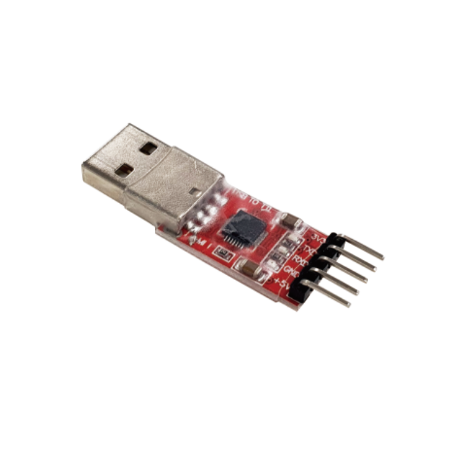 |
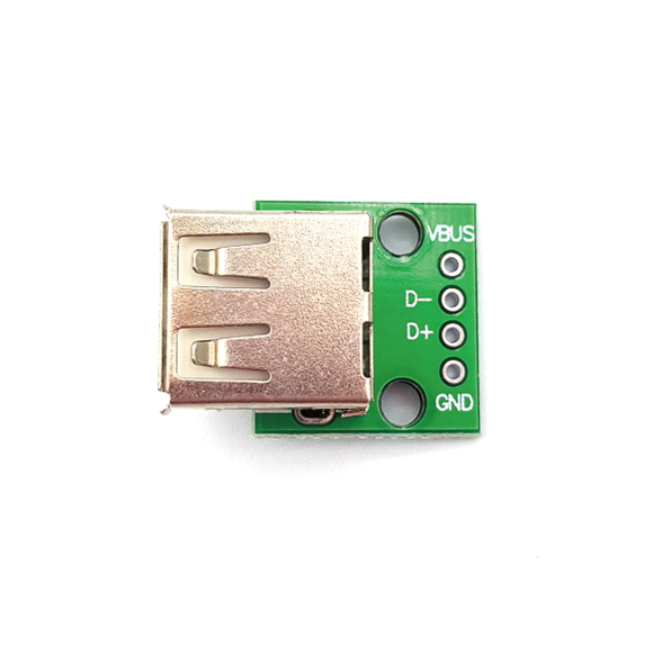 |
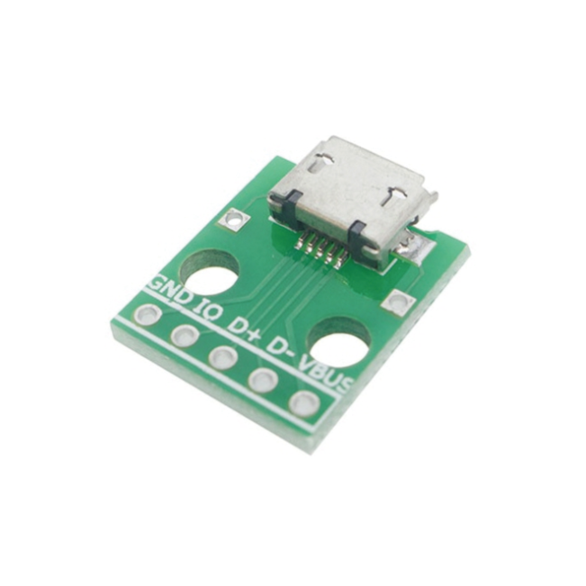 |
| USB/TTL 컨버터 |
USB AF 타입 -
JST GH 4Pin 케이블 |
마이크로 5Pin USB
DIP 어댑터 |
회로도
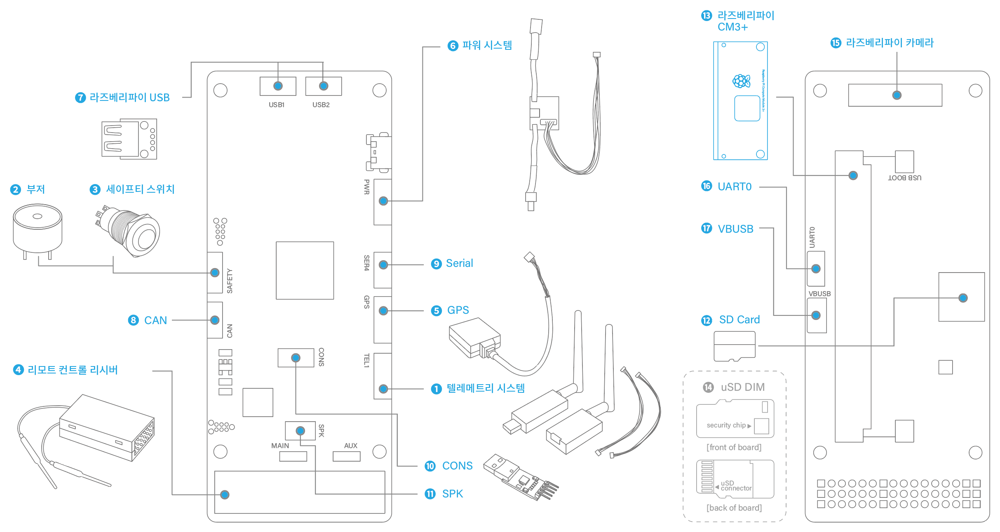
텔레메트리시스템
- 기체의 미션 계획을 실행하고, 기체 실시간 제어 및 모니터링이 가능합니다.
부저
- 기체의 상태를 알람으로 알려주는 오디오 신호를 제공합니다.
세이프티 스위치
- 기체 모터를 잠금/해제 할 수 있는 안전 스위치입니다.
리모트 컨트롤 리시버
- 조종자가 수동으로 기체를 제어할 수 있습니다.
파워시스템
- 외부 배터리와 연결할 수 있습니다.
라즈베리파이 USB
- 라즈베리파이에 USB를 사용하여 외부장비나 센서 모듈을 추가로 장착할 수 있습니다.
CAN
- 외부 기능을 사용하는 장치를 추가 설치할 수 있습니다.
Serial
- 직렬 통신을 사용하는 장치를 추가 설치할 수 있습니다.
CONS
- FMU에 접근하기 위한 시리얼 콘솔 포트입니다.
SPK
- Specktrum and DSM 회사 전용 리시버 입력 포트입니다.
라즈베리파이 CM3+
- 비행제어 프로그래밍을 하기 위해 사용됩니다.
uSD DIM(Drone Identification Module)
- 비행 정보를 암호화 및 복호화하기 위한 모듈을 탑재할 수 있습니다.
라즈베리파이 카메라
- 라즈베리파이 카메라 모듈을 사용할 수 있습니다.
UARTO
- 라즈베리파이와 Serial 통신이 가능합니다.
VBUSB
- 라즈베리파이의 운영체제 설치에 사용되는 USB Slave 포트입니다.
라즈베리파이 결합
- 자체적인 커넥션으로 R1 보드와 컴패니언 보드의 연결이 쉬움
- 별도의 추가 전원 없이 R1의 전력으로 컴패니언 보드에 전원 인가
- 기체의 프레임이 작아도 컴패니언 보드의 별도 페이로드 미발생
부속품 및 별도 구매품 상세설명
USB AF 타입 - JST GH 4핀 케이블
- 임무 컴퓨터인 라즈베리파이에 추가 센서 및 모듈을 USB로 연결, 사용할 수 있는 커넥터 ex) WIFI 모듈을 장착하여 무선(원격)으로 개발 가능
마이크로 5핀 USB DIP 어댑터
- 임무 컴퓨터인 라즈베리파이의 OS(운영체제)를 설치하기 위한 커넥터로, 함께 있는 'USB A타입 마이크로 5핀 케이블'로 컴퓨터와 연결하여 원하는 운영체제를 설치할 수 있다.
uSD DIM
- KCMVP 인증을 거친 SPI 통신을 사용하는 uSD 타입의 암호 모듈로 임무 컴퓨터인 라즈베리파이를 통해 비행 컴퓨터의 비행 데이터 및 로그 정보를 암복호화 할 수 있다.
- KCMVP 인증을 거친 USB A 타입의 암호 모듈로 임무 컴퓨터인 라즈베리파이를 통해 비행컴퓨터의 비행 데이터 및 로그 정보를 암복호화 할 수 있다.
실제 드론 K1, R1 장착 사진

더피치 FCC 주요 고객사
기술 및 제품 서비스 문의
e-mail: peach@thepeach.kr ｜ TEL: 042-721-9297